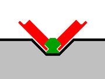
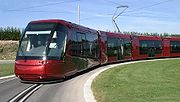

Транслёр (или Транслор) — (англ. Translohr) трамвай на шинах, использующий усовершенствованное крепление к единственному рельсу. Разработан и производится компанией Lohr Industrie (Франция).

Схема направляющего рельса и колеса, транслёр
В отличие от систем трамвая на шинах разработки Bombardier, использующихся в Нанси (см. Трамвай на шинах Нанси) и Кане, у транслора направляющий рельс охватывают два направляющих колеса. Транспортные средства транслора не могут передвигаться в автономном режиме (без рельса), так как они не оборудованы системой рулевого управления.

Клермон-Ферран
Действующие: